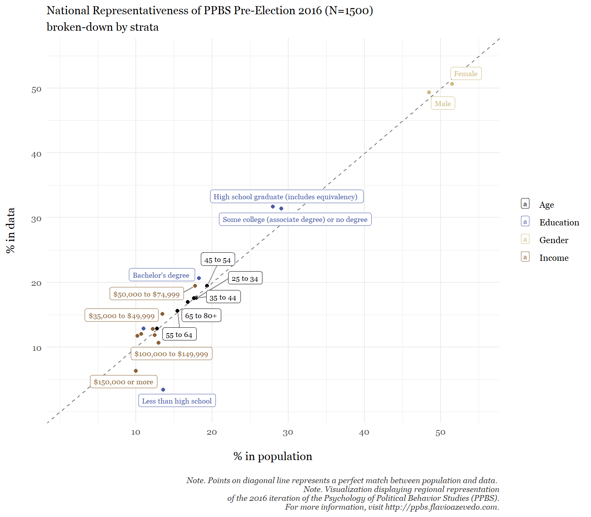
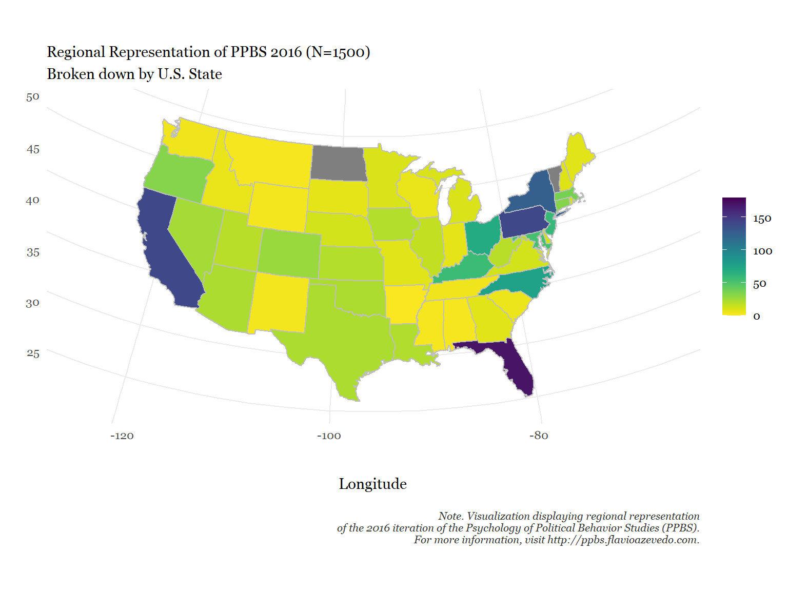
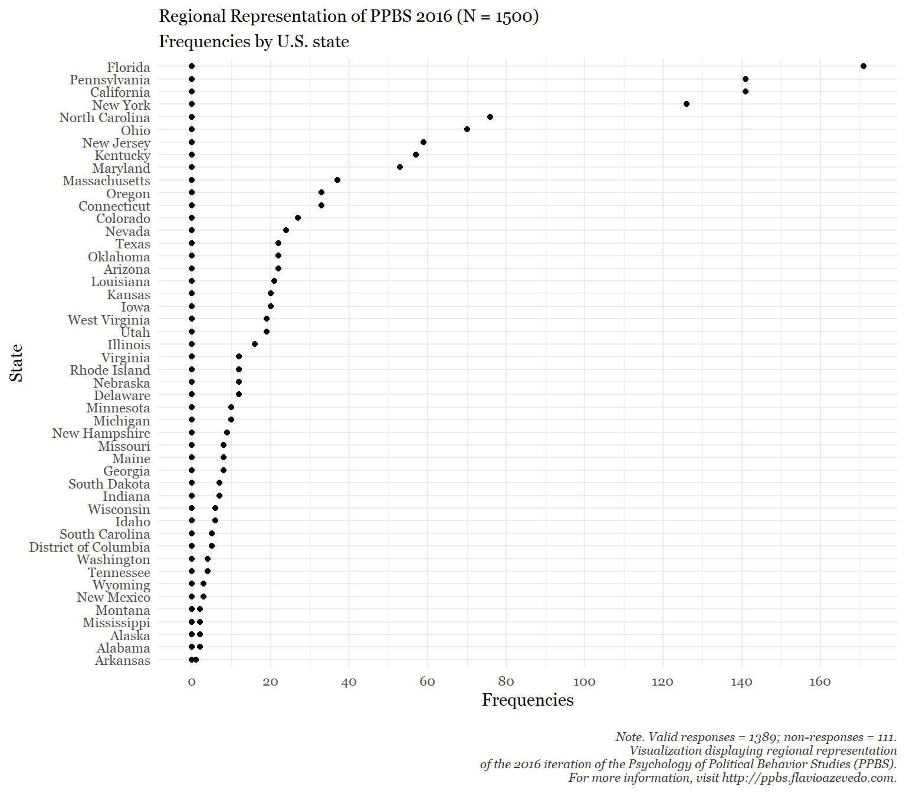

Survey Methodology of PPBS 2016
Country: United States; Survey Company: SSI (now Dynata)
Last updated: 27 September, 2025
load(here::here("data_processed", "[WD]_PPBS_US_2016_SSI_NR_CF.RData"))
quotas <- read.csv(here::here("quotas", "Quotas PPBS2016 NR SSI.csv")) library(lubridate)
library(here)
library(dplyr)
library(tidyr)
library(ggplot2)
library(scales)# NR
#------
NR.PPBS2016.WD$V9 <- lubridate::parse_date_time(as.character(NR.PPBS2016.WD$V9), c("%d-%m-%y %H:%M"), exact = TRUE)
# CF
#------
CF.PPBS2016.WD$V9 <- lubridate::parse_date_time(as.character(CF.PPBS2016.WD$V9), c("%d-%m-%y %H:%M"), exact = TRUE)The following describes the survey methodology of the 2016 iteration of The Psychology Political Behavior Studies (PPBS). This report is meant to detail the utilized survey methodology and relevant, general purpose characteristics of both exploratory and confirmatory samples, as well as any extra samples and its combined version. The text is in APA Style and is akin to an APA-like ‘Methods Section’.
PPBS datasets are designed to have an exploratory, quota-based Nationally Representative sample (on Age, Education, Income and Sex), and a Confirmatory (Replication) convenience sample, from the same data source to avoid false positives. Some PPBS studies also have recontacts or extra-samples to answer additional specific research questions (e.g., 2nd Sample in 2016). All data’s coodbooks can be found at the bottom of the page, with a searchable feature allowing to find metadata within and between columns.
Taken together, there were three independent samples collected in the months preceding the 2016 U.S. Presidential Election (from August 16th to September 19th, 2016) and amount to 4039 online interviews of American adults, lasting ~55 minutes (Median) for those successfully passing the variety of data quality checks (87%). The 2016 attrition rate was pretty constant at ~22%.
For more details, see PBBS’s Motivation.
PPBS.2016.metadata <- data.frame(
`Sample 1` = c("Pre-Election 2016",
"Nationally Representative",
"August 16th, 2016",
"September 16th, 2016",
"United States",
"Yes (11; various types)",
"Yes",
"Yes (begining of survey)",
1500,
51.28,
0.22, 0.16
),
`Sample 2` = c("Pre-Election 2016",
"Confirmatory (Replication)",
"August 20th, 2016",
"September 13th, 2016",
"United States",
"Yes (11; various types)",
"Yes",
"Yes (begining of survey)",
2119,
57.77,
0.22, 0.16
),
`Sample 3` = c("Pre-Election 2016",
"Extra (2nd Study)",
"September 15th, 2016",
"September 19th, 2016",
"United States",
"Yes (11; various types)",
"Yes",
"Yes (begining of survey)",
420,
55.54,
0.23, 0.07
)
)
#
names(PPBS.2016.metadata) <- c("Sample 1", "Sample 2", "Sample 3")
#
row.names(PPBS.2016.metadata) <- c(
"Election cycle",
"Type",
"Survey Period (Start)",
"Survey Period (End)",
"Country",
"Attention Checks",
"Time Checks",
"CAPTCHA",
"Sample Size (N)",
"Length of Interview (MD)",
"Attrition (%)",
"Data Quality checks (%)")
#
PPBS.2016.metadata$Overall <- c(
"Pre-Election",
"Convenience",
"August 16th, 2016",
"September 19th, 2016",
"United States",
"Yes (11; various types)",
"Yes",
"Yes (begining of survey)",
4039,
round(mean(c(51.28,57.77,55.54)),2),
round(mean(c(0.22,0.22,0.23)),2),
round(mean(c(0.16,0.16,0.07)),2)
)
#
library(kableExtra)
knitr::kable(PPBS.2016.metadata[,1:3],
digits = 2,
padding = 2,
align='c',
caption = "Metadata of PBBS 2016 Samples") %>%
kable_styling(bootstrap_options = c("striped", "hover")) %>%
row_spec(2, bold = T#,background = "#d3ddde"
) %>%
row_spec(9, bold = T#,background = "#d3ddde"
) %>%
kableExtra::footnote(general = "The Overall column displays the simple, non-weighted on sample size, average between the preceeding columns. If interested in the weighted averages, see section 'Combined Samples' below.", general_title = "Note. ", footnote_as_chunk = T, title_format = c("italic"))| Sample 1 | Sample 2 | Sample 3 | |
|---|---|---|---|
| Election cycle | Pre-Election 2016 | Pre-Election 2016 | Pre-Election 2016 |
| Type | Nationally Representative | Confirmatory (Replication) | Extra (2nd Study) |
| Survey Period (Start) | August 16th, 2016 | August 20th, 2016 | September 15th, 2016 |
| Survey Period (End) | September 16th, 2016 | September 13th, 2016 | September 19th, 2016 |
| Country | United States | United States | United States |
| Attention Checks | Yes (11; various types) | Yes (11; various types) | Yes (11; various types) |
| Time Checks | Yes | Yes | Yes |
| CAPTCHA | Yes (begining of survey) | Yes (begining of survey) | Yes (begining of survey) |
| Sample Size (N) | 1500 | 2119 | 420 |
| Length of Interview (MD) | 51.28 | 57.77 | 55.54 |
| Attrition (%) | 0.22 | 0.22 | 0.23 |
| Data Quality checks (%) | 0.16 | 0.16 | 0.07 |
| Note. The Overall column displays the simple, non-weighted on sample size, average between the preceeding columns. If interested in the weighted averages, see section ‘Combined Samples’ below. |
#
write.csv(PPBS.2016.metadata, file = here::here("metadata", "PPBS.2016.metadata.csv"))
#
detach("package:kableExtra", unload=TRUE)Nationally Representative Sample (N=1500)
Sample Description
We hired Survey Sampling Incorporated (SSI; www.surveysampling.com), a market research firm that recruits participants from a panel of over 7 million U.S. citizens, to recruit a nationally representative sample of 1500 Americans (50.67% women) in the months preceding the 2016 U.S. Presidential Election (from August 16 to September 16, 2016).
The quotas were designed to match the 2014 American Community Survey (ACS)1 from the US Census Bureau on age, income, education and gender. The representativeness of the collected sample is presented in the table below, which shows an average absolute deviation of 11.85% points (MD = 8.03% points) from the desired quotas, with age showing an an average absolute deviation of 0.85% points (MD = 0.72% points), gender 1.73% points (MD = 1.73% points), income 14.27% points (MD = 12.44% points), and education, 27.32% points (MD = 13.12% points), which had the largest spread on the bracket “Less than high school/No high school diploma”, for which we could only arrive at ~25% of the expected frequency, indicating the sample has achieved a moderate level of national representativeness.
In addition to administering a much greater number and variety of political and psychological instruments (including full scales) than in other nationally representative surveys (such as ANES, GSS, and WVS), we took a number of steps to insure that the quality of the data would be especially high. These included following professional recommendations to minimize problems of careless responding and satisficing behavior in online survey studies (Meade & Craig, 2012). Specifically, we employed 11 random attention questions, as well as page-time, survey-total, and click count controls.
A total of 2424 participants were directed to the survey, and 1885 of them finished the survey (attrition rate 22%). There were 385 (16%) participants who failed more than two attention checks or finished the survey in under ~22 minutes and were therefore excluded. For the final sample of 1500, participants who successfully completed all study materials had a completion time of 69.29 minutes on average (MD: 51.28min).
For the final sample of 1500, participants who successfully completed all study materials had a completion time of 69.29 minutes on average (MD: 51.28min).
The age distribution of our sample was as follows: 18–24 years (12.87%), 25–34 (17.6%), 35–44 (17.53%), 45–54 (19.47%), 55–65 (15.6%), and older than 65 (16.93%). The ethnic breakdown was: White (82.47%), Black/African American (7.67%), Latino (5.87%), Asian/Pacific Islander (1.93%), Native American (0.87%), Middle Eastern (1.2%). In terms of religion, (67.6% identified as Christian, 0.6% as Muslim, 3.47% as Jewish,15.33% as either Atheist or Agnostic, 13% and responded they are not sure, religion not listed, or refused to answer. With respect to education, 3.4% declared their highest educational achievement to be less high school, 31.67% indicated High school graduate (includes equivalency), 31.4% chose some college ( or associate degree) or no higher-education degree, 20.67% indicated having a Bachelor’s degree, and finally, 12.87% indicated having received a Graduate or professional degree. The median income category was . The exact distribution of Income is as follows: Less $15,000 (11.87%), $15,000 to $24,999 (12%), $25,000 to $34,999 (11.73%), $35,000 to $49,999 (15.13%), $50,000 to $74,999 (19.47%), $75,000 to $99,999 (12.8%), $100,000 to $149,999 (10.67%) and $150,000 more (6.33%).
#quotas
#
#
quotas.tbl <- quotas
#
#dput(names(quotas.tbl))
names(quotas.tbl) <- c("Demographic", "Brackets", "Census ACS %", "Expected Sample Frequencies", "Observed Frequencies", "Expected vs. Observed Frequencies", "Expected vs. Observed %")
#
library(kableExtra)
knitr::kable(quotas.tbl,
digits = 2,
padding = 2,
align='c',
caption = "National Representativeness of sample") %>%
kable_styling()| Demographic | Brackets | Census ACS % | Expected Sample Frequencies | Observed Frequencies | Expected vs. Observed Frequencies | Expected vs. Observed % |
|---|---|---|---|---|---|---|
| Age | 18 to 24 | 0.13 | 192 | 193 | 1 | 0.52 |
| Age | 25 to 34 | 0.18 | 269 | 264 | -5 | -1.86 |
| Age | 35 to 44 | 0.18 | 265 | 263 | -2 | -0.75 |
| Age | 45 to 54 | 0.19 | 290 | 292 | 2 | 0.69 |
| Age | 55 to 64 | 0.15 | 232 | 234 | 2 | 0.86 |
| Age | 65 to 80+ | 0.17 | 253 | 254 | 1 | 0.40 |
| Education | Less than high school | 0.14 | 204 | 51 | -153 | -75.00 |
| Education | High school graduate (includes equivalency) | 0.28 | 420 | 475 | 55 | 13.10 |
| Education | Some college (associate degree) or no degree | 0.29 | 436 | 471 | 35 | 8.03 |
| Education | Bachelor’s degree | 0.18 | 274 | 310 | 36 | 13.14 |
| Education | Graduate or professional degree | 0.11 | 165 | 193 | 28 | 16.97 |
| Gender | Female | 0.52 | 773 | 760 | -13 | -1.68 |
| Gender | Male | 0.48 | 727 | 740 | 13 | 1.79 |
| Income | Less than $15,000 | 0.12 | 188 | 178 | -10 | -5.32 |
| Income | $15,000 to $24,999 | 0.11 | 160 | 180 | 20 | 12.50 |
| Income | $25,000 to $34,999 | 0.10 | 153 | 176 | 23 | 15.03 |
| Income | $35,000 to $49,999 | 0.14 | 202 | 227 | 25 | 12.38 |
| Income | $50,000 to $74,999 | 0.18 | 267 | 292 | 25 | 9.36 |
| Income | $75,000 to $99,999 | 0.12 | 183 | 192 | 9 | 4.92 |
| Income | $100,000 to $149,999 | 0.13 | 195 | 160 | -35 | -17.95 |
| Income | $150,000 or more | 0.10 | 150 | 95 | -55 | -36.67 |
1 Note. An important note is that the US Census Bureau makes minor adjustments to its data over time and is not averse to closing tables and/or redesigning them. This is not particular of the US. Hence, the numbers were correct at date of access, which was Monday 1st August, 2016. Furthermore, due to this, we also provide representation in relation to the 2010 US Census, which is shown in the last column. Specifically, we take Gender and Age from U.S. Census Bureau, 2010 Census and Income and Education from 2010-2014 American Community Survey 5-Year Estimates, which at the time, were the most accurate data available.
library(ggrepel)
library(wesanderson)
library(viridis)
#quotas$Percentage
#dput(names(quotas))
quotas$Percentage_data <- quotas$freq/1500
#
ggplot(quotas, aes(x=Percentage*100, y=Percentage_data*100, color=Variable)) +
geom_point() +
geom_abline(intercept = 0, slope = 1,color = "grey50", linetype = "dashed") +
scale_color_manual(values=(rtist::rtist_palette("vermeer", 4))) +
scale_x_continuous(limits = c(1, 55), breaks = seq(10, 60, by = 10)) +
scale_y_continuous(limits = c(1, 55), breaks = seq(10, 60, by = 10)) +
#geom_text_repel(aes(label = Bracket), size = 3,family="Georgia", point.padding = 0.25, segment.color = 'grey50') +
geom_label_repel(aes(label = Bracket), family="Georgia", size = 2.5, box.padding = 0.2, point.padding = 0.2, segment.color = 'grey50', nudge_x=0.9) +
theme_minimal() +
labs(title="National Representativeness of PPBS Pre-Election 2016 (N=1500)",
subtitle="broken-down by strata",
caption = "\nNote. Points on diagonal line represents a perfect match between population and data. \nNote. Visualization displaying regional representation\n of the 2016 iteration of the Psychology of Political Behavior Studies (PPBS).\nFor more information, visit http://ppbs.flavioazevedo.com.",
y="% in data\n",
x="\n% in population",
fill = "Strata") +
theme(legend.position='right',
legend.title=element_blank(),
text=element_text(size=11, family="Georgia"),
plot.title = element_text(size = 11, family="Georgia"),
plot.caption = element_text(color = "#383838", face = "italic", size = 8)) 
#
#
#
#write.csv(quotas, file = "PPBS.2016.quotas.csv")
#Regional Representation
As shown below, the distribution of data points per state tracks well with state population. The date has not been designed to be regionally representative, nor it claims to be, but results are not bad (cf. US Decennial Census Tables). Please note that frequencies add to 1389, not to 1500, due to non-responses.
library(dplyr)
library(ggplot2)
library(viridis)
library(maps) # for map_data("state")
# --- 1) One lookup for codes -> states (incl. DC) ------------------------------
state_map <- c(
"Alabama","Alaska","Arizona","Arkansas","California",
"Colorado","Connecticut","Delaware","Florida","Georgia",
"Hawaii","Idaho","Illinois","Indiana","Iowa","Kansas",
"Kentucky","Louisiana","Maine","Maryland",
"Massachusetts","Michigan","Minnesota","Mississippi","Missouri",
"Montana","Nebraska","Nevada","New Hampshire","New Jersey",
"New Mexico","New York","North Carolina","North Dakota","Ohio",
"Oklahoma","Oregon","Pennsylvania","Rhode Island","South Carolina",
"South Dakota","Tennessee","Texas","Utah","Vermont",
"Virginia","Washington","West Virginia","Wisconsin","Wyoming",
"District of Columbia"
)
lookup <- tibble(
code = 1:51,
state = state_map,
region = tolower(state)
)
# --- 2) Count frequencies by code and attach names -----------------------------
counts <- NR.PPBS2016.WD %>%
filter(!is.na(Dem_State_1)) %>%
count(code = Dem_State_1, name = "Frequencies") %>%
left_join(lookup, by = "code")
# --- 3) Get base polygons (note: maps::state has 50 states, NO DC) ------------
states_map <- map_data("state")
# --- 4) Join polygons to data; drop DC (or use sf/tigris if you need DC) ------
plot_df <- states_map %>%
left_join(counts %>% filter(state != "District of Columbia"),
by = "region")
# --- 5) Plot -------------------------------------------------------------------
ggplot(plot_df, aes(long, lat, group = group)) +
geom_polygon(aes(fill = Frequencies), color = "grey") +
scale_fill_viridis(limits = c(0, 180), direction = -1) +
coord_map(projection = "albers", lat0 = 39, lat1 = 45) +
theme_minimal() +
labs(
title = "Regional Representation of PPBS 2016 (N=1500)",
subtitle = "Broken down by U.S. State",
caption = "\nNote. Visualization displaying regional representation\n of the 2016 iteration of the Psychology of Political Behavior Studies (PPBS).\nFor more information, visit http://ppbs.flavioazevedo.com.",
y= expression("Latitude\n\n"),
x="\n\nLongitude",
fill = "Frequencies"
) +
theme(
legend.position = "right",
legend.title = element_blank(),
text = element_text(size = 11, family = "Georgia"),
plot.title = element_text(size = 11, family = "Georgia"),
plot.caption = element_text(color = "#383838", face = "italic", size = 8)
)
# Option A: include DC in the tabulation (recommended)
counts_all <- counts %>%
select(state, region, Frequencies) %>%
tidyr::complete(state, region, fill = list(Frequencies = 0)) %>%
arrange(desc(Frequencies))
# If you want to match the map (which excluded DC), uncomment:
# counts_all <- counts_all %>% filter(state != "District of Columbia")
# Compute nonresponse from the raw variable used in block 1
n_total <- nrow(NR.PPBS2016.WD)
n_nonresp <- sum(is.na(NR.PPBS2016.WD$Dem_State_1))
n_valid <- n_total - n_nonresp
ggplot(counts_all, aes(x = Frequencies, y = reorder(state, Frequencies))) +
geom_point() +
theme_minimal() +
scale_x_continuous(breaks = pretty_breaks(n = 10)) +
labs(
title = "Regional Representation of PPBS 2016 (N = 1500)",
subtitle = "Frequencies by U.S. state",
caption = paste0(
"\nNote. Valid responses = ", n_valid,
"; non-responses = ", n_nonresp, ".", "\nVisualization displaying regional representation\n of the 2016 iteration of the Psychology of Political Behavior Studies (PPBS).\nFor more information, visit http://ppbs.flavioazevedo.com."),
x = "Frequencies",
y = "State"
) +
theme(
legend.position = "none",
text = element_text(size = 11, family = "Georgia"),
plot.title = element_text(size = 11, family = "Georgia"),
plot.caption = element_text(color = "#383838", face = "italic", size = 8)
)
Convenience Confirmatory (Replication) Sample (N=2119)
Sample Description
Also through SSI, we also administered the same survey to a large convenience sample of 2119 American adults (21.47% women) in the months preceding the 2016 U.S. Presidential Election (from August 20 to September 13, 2016).
We applied the same quality-control criteria as explained in the Nationally Representative sample. Specifically, we followed recommendations to minimize the problem of careless responding in online studies (Meade & Craig, 2012).
A total of 3425 participants were directed to the survey, and 2662 of them finished the survey (attrition rate 22%). There were 543 (16%) participants who failed more than two attention checks or finished the survey in under ~22 minutes and were therefore excluded.
For the final sample of 2119, participants who successfully completed all study materials had a completion time of 92.01 minutes on average (MD: 57.77min).
The age distribution of our sample was as follows: 18–24 years (9.06%), 25–34 (13.83%), 35–44 (11.42%), 45–54 (2.74%), 55–65 (3.63%), and older than 65 (59.32%). The ethnic breakdown was: White (85.89%), Black/African American (5.05%), Latino (4.11%), Asian/Pacific Islander (2.17%), Native American (0.94%), Middle Eastern (1.84%). In terms of religion, (70.65% identified as Christian, 0.52% as Muslim, 5.57% as Jewish,13.69% as either Atheist or Agnostic, 9.58% and responded they are not sure, religion not listed, or refused to answer. With respect to education, 1.04% declared their highest educational achievement to be less high school, 15.15% indicated High school graduate (includes equivalency), 40.4% chose some college ( or associate degree) or no higher-education degree, 23.88% indicated having a Bachelor’s degree, and finally, 19.54% indicated having received a Graduate or professional degree. The median income category was . The median income category was . The exact distribution of Income is as follows: Less $15,000 (10.15%), $15,000 to $24,999 (8.07%), $25,000 to $34,999 (11.09%), $35,000 to $49,999 (14.39%), $50,000 to $74,999 (21.24%), $75,000 to $99,999 (14.91%), $100,000 to $149,999 (11.89%) and $150,000 more (11.89%).
Combined Samples (N=3619)
Sample Description
We combined and analyzed data from two large surveys conducted before the 2016 U.S. General Election (from August 16 to September 16, 2016), including a nationally representative sample (N = 1500) and a large convenience sample (N = 2119; see Azevedo, Jost, & Rothmund, 2017; Azevedo, Jost, Rothmund, & Sterling, 2019). We hired SSI (SSI; www.surveysampling.com), a survey research firm that recruits participants from a pool of over 7 million U.S. citizens. We took a number of steps to insure that the quality of the data would be especially high. These included following professional recommendations to minimize problems of careless responding and satisficing behavior in online survey studies (Meade & Craig, 2012). Specifically, we employed 11 random attention questions, page-time and number of clicks controls.
A total of 5849 participants were directed to the survey, and 4547 of them finished the survey (attrition rate 22%). There were 928 (16%) participants who failed more than two attention checks or finished the survey in under ~22 minutes and were therefore excluded.
For the final sample of 3619, participants who successfully completed all study materials had a completion time of 82.6 minutes on average (MD: 55.15min).
The age distribution of our sample was as follows: 18–24 years (10.64%), 25–34 (15.39%), 35–44 (13.95%), 45–54 (9.67%), 55–65 (8.59%), and older than 65 (41.75%). The ethnic breakdown was: White (84.47%), Black/African American (6.13%), Latino (4.84%), Asian/Pacific Islander (2.07%), Native American (0.91%), Middle Eastern (1.58%). In terms of religion, (69.38% identified as Christian, 0.55% as Muslim, 4.7% as Jewish,14.37% as either Atheist or Agnostic, 11% and responded they are not sure, religion not listed, or refused to answer. With respect to education, 2.02% declared their highest educational achievement to be less high school, 22% indicated High school graduate (includes equivalency), 36.67% chose some college ( or associate degree) or no higher-education degree, 22.55% indicated having a Bachelor’s degree, and finally, 16.77% indicated having received a Graduate or professional degree. The median income category was $50,000 to $74,999. The exact distribution of Income is as follows: Less $15,000 (10.86%), $15,000 to $24,999 (9.7%), $25,000 to $34,999 (11.36%), $35,000 to $49,999 (14.7%), $50,000 to $74,999 (20.5%), $75,000 to $99,999 (14.04%), $100,000 to $149,999 (11.38%) and $150,000 more (11.38%).
Codebook
Search box on the right finds items in all columns. Search boxes at the column level finds matches in their specific column.